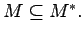
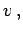
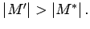

Ermittlung maximaler Matchings
Gegeben sei ein Graph G mit einem Matching M .
-
Man bilde zu M ein gesättigtes Matching M* mit 
-
Man wähle in G einen Knoten  der mit keiner Kante aus M* inzidiert, und suche in G einen zunehmenden alternierenden Weg, der in v beginnt.
-
Existiert ein solcher Weg, dann liefert das oben beschriebene Austauschverfahren ein Matching M' mit  Existiert kein solcher Weg, dann lösche man in G den Knoten v und alle mit v inzidierenden Kanten und wiederhole Schritt b).
Es gibt einen kompliziert zu beschreibenden Algorithmus von EDMONDS, der sich zur effektiven Suche nach maximalen Matchings eignet (s. Lit. 5.39).